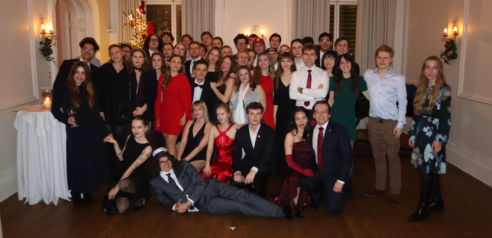
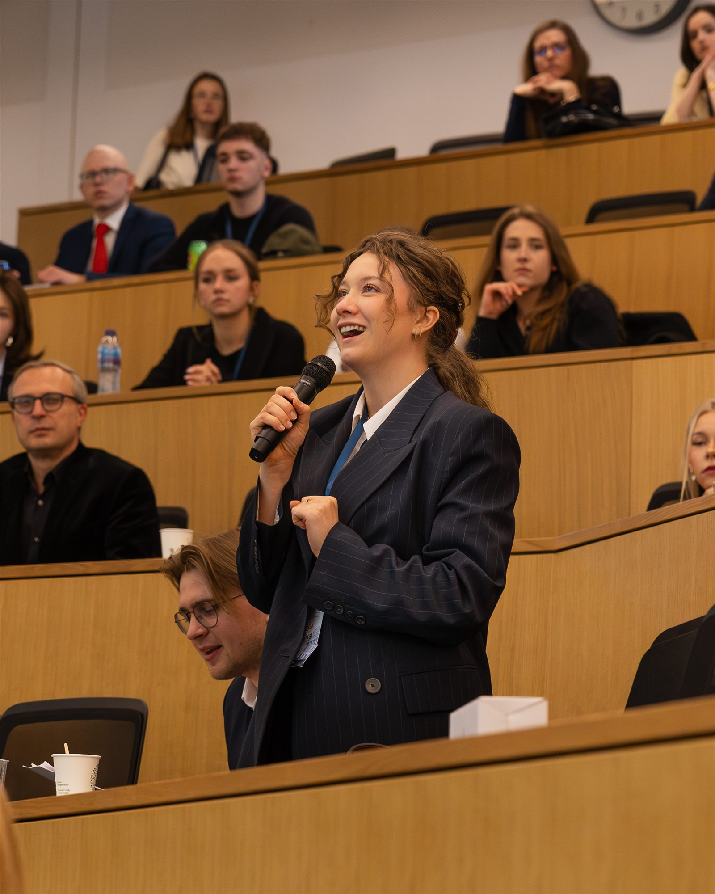
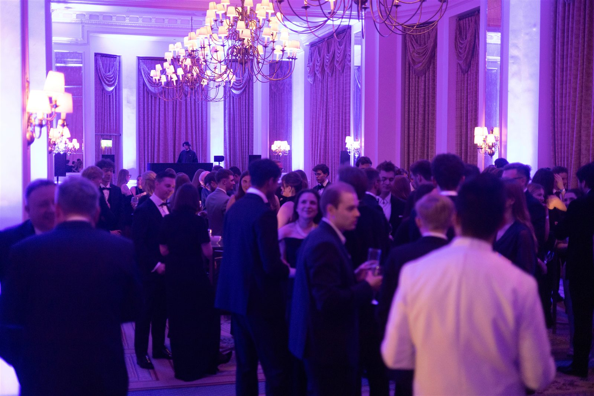

We unite Polish student societies across British universities — advocating for, representing and supporting Polish students and everyone passionate about Polish culture in the UK.
The Federation of Polish Societies is a UK Charity Commission-registered
charity, focused around the integration of Polish students, and those
interested in Polish culture, studying at British universities. Our aim
is to advocate for, represent and help Polish students in the UK.
We were established in 2013 to help foster collaboration between
different Polish student communities in the UK and represent their
interests before both public and private bodies in the UK, Poland
and the EU.

We represent the interests of Polish students before public and private bodies in the UK, Poland and the EU — from embassies to employers.
We connect Polish societies at universities nationwide, supporting local communities and organising with them at a national level.
From the Polish Business Forum at London Business School to the Christmas Dinner at Ognisko — events that bring hundreds of students together.
Our largest event ever — 300+ attendees, world-class speakers and the inaugural Forum Ball.
An Oxford-style debate on polarisation and disinformation, opened by Prof. Nicholas O'Shaughnessy.
100 students, a traditional three-course wigilia and carol singing in South Kensington.
A day of panels with the Polish Embassy, closed with a Chopin recital for Independence Day.
~200 students open the year with drinks in Waterloo and meet the new committee.
Over 300 students, professionals and leaders gathered at London Business School under the theme “Polish Golden Age: From Emerging to Leading” — with speakers from Goldman Sachs, Microsoft, EBRD and more.




The organisations we're proud to call our partners — supporting our events, our members and our mission throughout the year.


Local Polish societies are the backbone of our membership. Join the Federation and plug your community into a nationwide network.
Get in touch →